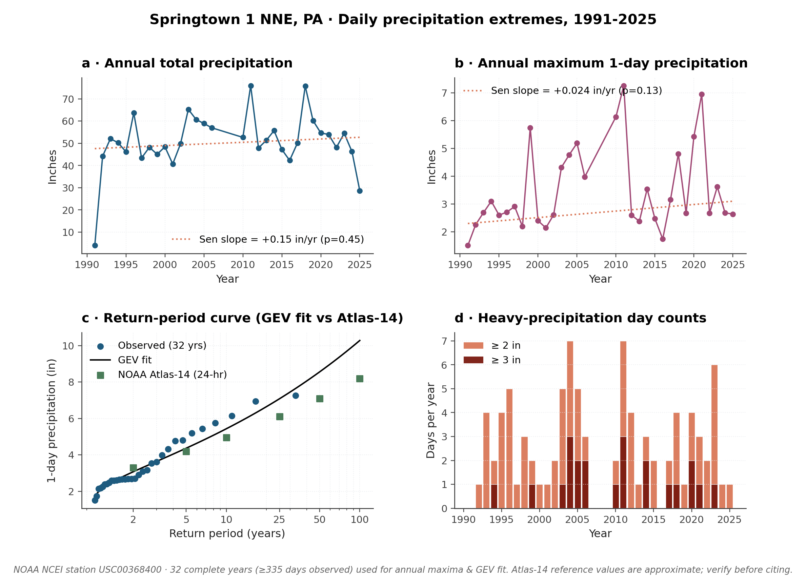
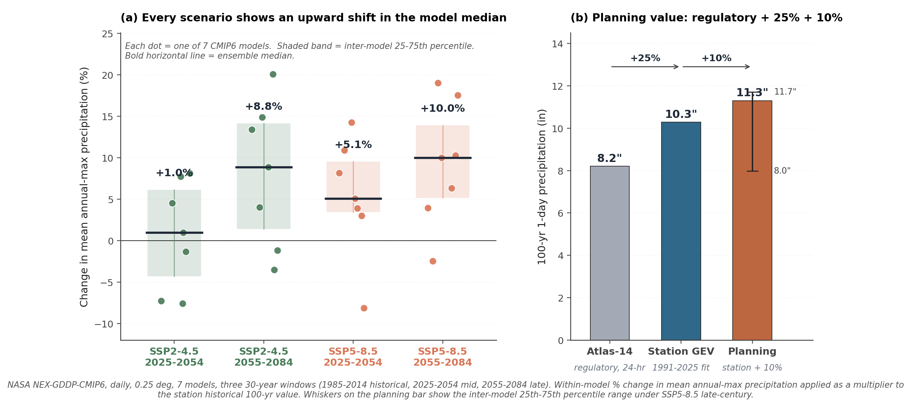
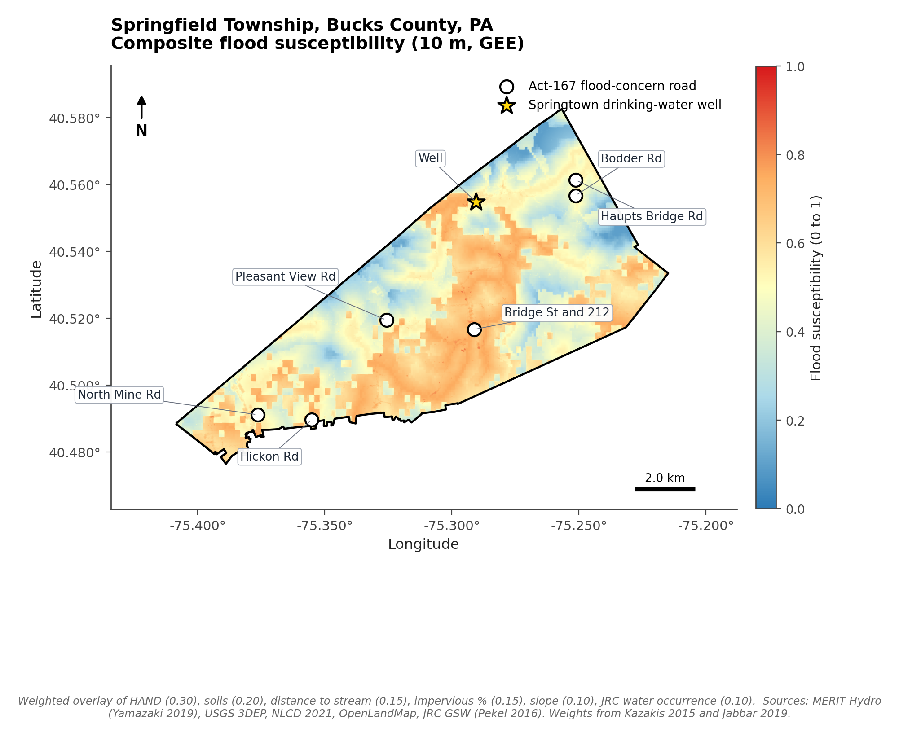
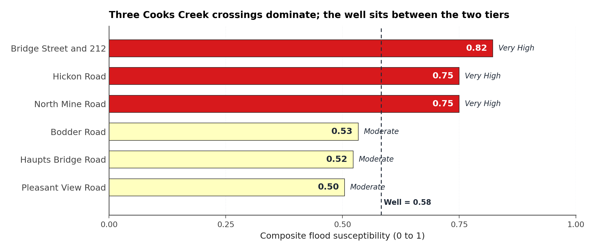
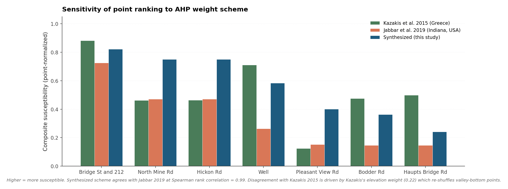

Three flood-resilience decisions for the Comprehensive Plan update
Springfield Township is rewriting its Comprehensive Plan in a climate where the rainfall numbers the current ordinances were built on no longer match what the township actually receives. This page summarizes what we (the AGU Thriving Earth Exchange science team paired with the Township) found, and the three decisions the Township could reasonably fold into the update.
Look at the map first
Warmer colors mark places more likely to flood than the township average. Open circles are the six road sites the Township already flagged in its Act 167 list; the yellow star is the Springtown drinking-water well. Toggle layers and click a marker for its underlying numbers.
The map's underlying method, layers, and weights are explained in Where flood risk concentrates and Inputs and weights.
Why this matters now
Springfield Township covers about 24 of the 30 square miles of the Cooks Creek Watershed. The current floodplain maps and stormwater ordinances were built on rainfall statistics from before the recent clustering of extreme storms. Hurricane Irene (August 2011) and Hurricane Ida (September 2021) each dropped roughly seven inches of rain on the township in a day, and Ida alone caused about $90,000 in township-wide damage. Both storms would have been smaller events in the historical rainfall record the current rulebook assumes.
The Comprehensive Plan update is the natural moment to bring those numbers up to date and to put the next round of stormwater capital spending where the data say the risk concentrates. We prepared this page using only public data and code that anyone can rerun, so a follow-on engineering study or grant application can build on every number here without redoing the analysis from scratch.
What we found, at a glance
Three recommendations for the Comprehensive Plan update
Each recommendation below links to the section of this page that carries its supporting evidence; each is sized to be folded into the Plan update or the next capital cycle without further study.
- Update the design-storm value used in the stormwater and floodplain ordinances. The current 8.2 inch (Atlas-14) reference is below what the station record already shows; once climate uplift is included, a roughly 11 inch one-day rainfall is what the data support for forward-looking infrastructure. Evidence: Design rainfall + Climate uplift.
- Focus the next capital cycle on three Cooks Creek road crossings. Bridge St & 212, North Mine Rd, and Hickon Rd are the three sites where the susceptibility analysis most strongly agrees with the Township's own flood-concern list. The other three sites flag a different failure mode (local stormwater on small drainages) that needs its own workstream. Evidence: Where flood risk concentrates + Priority sites.
- Specify a generator-pad elevation for the Springtown well. Plan around 8 to 10 feet above normal creek level, with a single tape measurement at the well-yard (see Next steps) that would let the consulting engineer turn this into an exact number. Evidence: Priority sites and the well.
Design rainfall, 1991 to 2025
The biggest one-day storms hitting the township today are about a quarter larger than the federal rainfall numbers the ordinances reference. The chart and tables below show how we get there from 34 years of rain-gauge records at the Springtown weather station, two miles north of the township.

How big is each "design storm"?
The bottom row of the table is the one to use for the rarest, most damaging storms. A 100-year, 1-day rainfall today is roughly Hurricane Ida (about 7 inches in 24 hours) plus three more inches on top.
| Duration | 2-yr | 10-yr | 25-yr | 50-yr | 100-yr |
|---|---|---|---|---|---|
| 1-day max (in) | 3.07 | 5.44 | 7.08 | 8.56 | 10.28 |
| 3-day max (in) | 3.84 | 7.11 | 9.92 | 12.80 | 16.57 |
| 7-day max (in) | 5.43 | 8.19 | 9.45 | 10.32 | 11.14 |
Compared to NOAA Atlas-14, the rainfall basis the ordinances reference
| How rare | Federal Atlas-14 (in) | Springtown gauge (in) | Gap |
|---|---|---|---|
| 1-in-10-year storm | 4.95 | 5.44 | +10% |
| 1-in-25-year storm | 6.10 | 7.08 | +16% |
| 1-in-50-year storm | 7.10 | 8.56 | +21% |
| 1-in-100-year storm | 8.20 | 10.28 | +25% |
The 34-year record at this one station is too short to detect a trend, but that is not "no change"
Statistical tests on the 32 complete years of Springtown rainfall show no significant trend in annual totals, annual maxima, or counts of heavy-rain days at the usual significance level. The record is simply too short to detect the regional climate signal at one gauge. Climate models, looked at separately in Climate uplift, do show that signal clearly. The right reading of the table below is "we have not proven a trend at this gauge yet," not "the storms are not getting bigger."
| Metric | Slope per year | Significance (p-value) |
|---|---|---|
| Annual total rainfall (in) | +0.15 | 0.45 |
| Largest 1-day rain each year (in) | +0.024 | 0.13 |
| Largest 3-day rain each year (in) | +0.009 | 0.76 |
| Days with at least 2 inches (per year) | 0.00 | 0.96 |
| Days with at least 3 inches (per year) | 0.00 | 0.39 |
Climate uplift
On top of the already-larger storms in today's record, a seven-model climate ensemble suggests the typical annual extreme rainfall at the township grows by roughly another 5 to 10 percent by the second half of this century. We recommend folding that uplift into any new infrastructure designed during the next Comprehensive Plan cycle, so it does not need to be rebuilt before the end of its design life.

How much do extreme rainfalls grow under each scenario?
"SSP2-4.5" is a moderate-emissions future, "SSP5-8.5" is a high- emissions future. The numbers are percent changes in the typical annual extreme rainfall, not in any single record-breaking storm. The middle-half range gives a sense of how much the seven models disagree with each other.
| Scenario | Period | Median change | Middle half (25th to 75th) |
|---|---|---|---|
| SSP2-4.5 (moderate) | 2025-2054 | +1.0% | -4.3% to +6.1% |
| SSP2-4.5 (moderate) | 2055-2084 | +8.8% | +1.4% to +14.1% |
| SSP5-8.5 (high) | 2025-2054 | +5.1% | +3.5% to +9.5% |
| SSP5-8.5 (high) | 2055-2084 | +10.0% | +5.1% to +13.9% |
The three reference points for the 100-year, 1-day storm
| Reference | Inches per day |
|---|---|
| NOAA Atlas-14 (federal, what the ordinance cites today) | 8.2 |
| Springtown gauge fit (today's climate) | 10.3 |
| Planning target (gauge + 10% climate uplift) | ~11.3 |
Where flood risk concentrates
The map below points to the same flood-prone places the Township already knows from experience, which is the validation test that matters most. It is a relative ranking of vulnerability built from elevation, distance to streams, soils, and land cover; it does not predict how deep the water would get in any particular storm.

The layer-toggle interactive version of this map sits at the top of the page.
How much of the township falls into each susceptibility band?
The five color bands are defined so that each covers roughly a fifth of the township by area; what carries the meaning is where those bands sit on the map, not the area totals themselves.
| Category | Area (sq mi) | % of Twp |
|---|---|---|
| Very Low | 6.10 | 20% |
| Low | 6.13 | 20% |
| Moderate | 6.15 | 20% |
| High | 6.38 | 21% |
| Very High | 6.02 | 20% |
Priority sites and the well
Three of the six road sites the Township already flagged come out clearly at the top of the susceptibility ranking; the drinking-water well sits just below them. The bottom three sites score Moderate not because they are safe but because they likely flood from a different mechanism (see below).

The six Act-167 road sites, in priority order
| Site | Susceptibility score | Tier | Height above creek (m) | Distance to creek (m) | Upstream drainage area (km²) | Built-up % nearby |
|---|---|---|---|---|---|---|
| Bridge St & 212 | 0.82 | Very High | 0.0 | 0 | 16.43 | 48 |
| North Mine Rd | 0.75 | Very High | 0.0 | 0 | 3.64 | 0 |
| Hickon Rd | 0.75 | Very High | 0.0 | 0 | 2.74 | 0 |
| Bodder Rd | 0.53 | Moderate | 5.4 | 9 | 0.01 | 0 |
| Haupts Bridge Rd | 0.52 | Moderate | 8.8 | 19 | 0.01 | 0 |
| Pleasant View Rd | 0.50 | Moderate | 0.0 | 365 | 0.97 | 1 |
The three Moderate sites are not safe. They sit off the main creek network at the resolution our maps can resolve, and they almost certainly flood from a different mechanism: stormwater piling up on small local drainages during intense rain. That kind of flooding needs site-specific drainage work rather than the kind of capital project the three Very-High sites call for.
Springtown drinking-water well: how high to mount the generator
Coordinate (decoded from Lorna Yearwood's Google Maps short URL): 40.55481° N, 75.29055° W. Please confirm this is the right well before acting on the recommendation below.
| Metric | Value at the well |
|---|---|
| Susceptibility score | 0.58 (High tier) |
| Height above nearest creek | ~0 m (on the channel) |
| Distance to nearest creek | ~0 m |
| Drainage area feeding past the well | 10.3 km² (about 4 mi²) |
| Built-up surface in the nearby 30 m cell | 22% |
Inputs and weights
The susceptibility score combines six public spatial layers; each layer's weight comes from a published study in a similar US or European watershed, not from our judgment. A consultant or peer reviewer can swap any weight and rerun the analysis from the project scripts.
The six layers and where their weights come from
| Layer | Source (GEE asset) | Weight | Why this weight |
|---|---|---|---|
| HAND (Height Above Nearest Drainage) | MERIT/Hydro/v1_0_1 hnd | 0.30 | Nobre 2011, 2016. Physically subsumes Kazakis 2015's "flow accumulation + elevation" mass. |
| Soils (texture proxy) | OpenLandMap USDA texture class | 0.20 | Jabbar 2019 used 0.22 in a karst-relevant US basin. |
| Distance to stream | derived from MERIT upa > 1 km² | 0.15 | Matches Kazakis 2015 (0.16). |
| Impervious % | NLCD 2021 | 0.15 | Jabbar 2019 used 0.36 in a 38%-urban basin; rescaled down because Springfield is mostly rural. |
| Slope | USGS/3DEP/10m_collection | 0.10 | Both Kazakis and Jabbar converge on 0.10. |
| JRC surface-water occurrence | JRC/GSW1_4 occurrence | 0.10 | Pekel 2016. Empirical confirmation overlay, kept small and transparent. |
Does the ranking depend on the weights we chose?
The three top sites stay the three top sites under every published weighting scheme we tested. Only the ordering of the lower three sites shifts with the choice of weights, and the direction of that shift is explainable from how each reference study weighted elevation.

References
Methodological backbone (AHP weighting)
- Jabbar, F. K., Grote, K., & Tucker, R. E. (2019). A novel approach for assessing watershed susceptibility using weighted overlay and analytical hierarchy process (AHP) methodology: a case study in Eagle Creek Watershed, USA. Environmental Science and Pollution Research, 26(31), 31981 to 31997. doi:10.1007/s11356-019-06402-5
- Kazakis, N., Kougias, I., & Patsialis, T. (2015). Assessment of flood hazard areas at a regional scale using an index-based approach and Analytical Hierarchy Process: Application in Rhodope-Evros region, Greece. Science of the Total Environment, 538, 555 to 563. doi:10.1016/j.scitotenv.2015.08.055
- Saaty, T. L. (1990). How to make a decision: The Analytic Hierarchy Process. European Journal of Operational Research, 48(1), 9 to 26. doi:10.1016/0377-2217(90)90057-I
HAND descriptor
- Nobre, A. D., Cuartas, L. A., Hodnett, M., Rennó, C. D., Rodrigues, G., Silveira, A., Waterloo, M., & Saleska, S. (2011). Height Above the Nearest Drainage, a hydrologically relevant new terrain model. Journal of Hydrology, 404(1 to 2), 13 to 29. doi:10.1016/j.jhydrol.2011.03.051
- Nobre, A. D., Cuartas, L. A., Momo, M. R., Severo, D. L., Pinheiro, A., & Nobre, C. A. (2016). HAND contour: a new proxy predictor of inundation extent. Hydrological Processes, 30(2), 320 to 333. doi:10.1002/hyp.10581
Datasets we relied on
- Pekel, J.-F., Cottam, A., Gorelick, N., & Belward, A. S. (2016). High-resolution mapping of global surface water and its long-term changes. Nature, 540(7633), 418 to 422. doi:10.1038/nature20584
- Yamazaki, D., Ikeshima, D., Sosa, J., Bates, P. D., Allen, G. H., & Pavelsky, T. M. (2019). MERIT Hydro: A high-resolution global hydrography map based on latest topography dataset. Water Resources Research, 55(6), 5053 to 5073. doi:10.1029/2019WR024873
- NOAA NCEI station USC00368400 (Springtown 1 NNE), daily precipitation 1991-12 to 2025-06.
What this dashboard cannot do for you
Three honest limits the Supervisors should know about before the recommendations on this page move into ordinance language or a capital plan. Each item below is framed in terms of what it means for the decision, with the technical reason underneath.
This map ranks where flooding is more likely, but does not tell you how deep the water will get
- The susceptibility score sorts places relative to each other; it does not produce a water-surface elevation for any storm. For a specific elevation at a specific site, the consulting engineer will still need a site-specific hydraulic analysis. Read the Township's existing FEMA flood maps alongside this dashboard, not in place of them.
- The underlying stream network resolves Cooks Creek and its bigger tributaries but is too coarse (about 90 metres per pixel) to capture the smallest local drainages. That is why some of the Township's flood-prone sites score Moderate rather than Very High; those sites likely flood from local stormwater rather than Cooks Creek itself.
- Springfield's limestone karst drives sinkholes and rapid subsurface flow that no surface-water index captures. If a specific parcel under consideration is known to be karst-prone, the dashboard's score is incomplete for that parcel.
We borrowed the weights from similar studies; an hour of local elicitation would refine them
- The six weights that produce the susceptibility score are taken from two published studies in comparable watersheds, not from the Township's own staff or contractors. An informal one- hour pairwise-comparison session with the Township engineer, the Cooks Creek Watershed Association, and the Bucks County Planning Commission would let us replace the borrowed weights with Springfield-specific ones and produce a consistency check. We have not seen that change the top three sites in any test so far.
- The climate uplift is applied only to the rainfall numbers, not to the spatial map. A future-flood map (today's map redrawn under tomorrow's rainfall) is a reasonable next deliverable but is not what is shown here.
The records we used are real but short
- The Springtown rain-gauge record runs only 34 years, which is enough to estimate the size of today's design storms but not long enough to prove a statistically significant upward trend at that one gauge. The right reading of the trend table is "we have not proven a trend at this gauge yet," not "the storms are not getting bigger."
- The 10% climate uplift is the most stable signal across seven CMIP6 models. If someone asks instead about the change in the 100-year storm itself, the same models disagree widely (the middle half of models lands anywhere from a 22% drop to a 28% rise). We rely on the more stable typical-extreme signal as the planning multiplier.
- Seven climate models is a modest ensemble. Adding more would tighten the median estimate but is unlikely to change the qualitative finding of roughly 5 to 10% growth in extreme rainfall.
Suggested next steps
Three short actions, each sized to a single Township staff visit, an hour-long meeting, or a paragraph in the Comprehensive Plan update. Each item names who could lead it, what specifically we need from them, and how the team would know it landed.
- Tape measurement at the Springtown well-yard. Owner: a Township staff member or the consulting engineer. Ask: three measurements from the existing generator pad up to (a) the normal Cooks Creek water surface today, (b) the Hurricane Ida (Sept 2021) high-water mark if anyone can still identify it, and (c) the Hurricane Irene (Aug 2011) high-water mark if anyone has a reference. By when: before the well's generator specification is finalized. What we do with it: turn the 8 to 10 foot range in this memo into a single defensible pad-height number.
- One-hour weight-setting meeting. Owners: the project science team, the Township engineer, a Cooks Creek Watershed Association representative, and the Bucks County Planning Commission. Ask: walk through the six factors on the susceptibility map and set Springfield-specific weights by pairwise comparison. By when: before the Plan update language goes to public comment. What we do with it: rerun the map and re-verify the priority site list the same day.
- Use roughly 11 inches as the planning one-day rainfall in new ordinance language. Owners: the Township engineer and the Bucks County Planning Commission. Ask: when the Comprehensive Plan update touches stormwater or floodplain provisions, reference the gauge-fit plus 10% climate uplift (roughly 11 inches per day) rather than the 8.2 inch federal default, and cite this dashboard as the basis. By when: during the Plan update drafting cycle. What we do with it: the design rainfall used in any new Township stormwater work is now in line with what the rain gauge and climate models both indicate.
Contact the team
This dashboard is the team's public summary. The underlying analysis code, the per-site raw data, and the longer well memo are available on request to anyone the Township directs to us.
AGU Thriving Earth Exchange
Springfield Township, Bucks County, PA
What we can share
- The well-generator memo to the Township.
- The 10 m susceptibility GeoTIFF for use in QGIS or ArcGIS.
- Per-point CSVs of every sampled metric.
- The analysis scripts (Python and Google Earth Engine).
What this dashboard is, and is not
This is a research-grade screening tool built by university scientists with the Springfield Township government and the Cooks Creek Watershed Association under the AGU Thriving Earth Exchange. It is not an engineering certification, a regulatory floodplain map, or a substitute for FEMA NFHL or a detailed hydraulic model. It is meant to inform priority-setting and to be used in conversation with the project team.